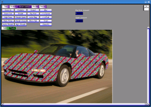

| This demo is similar to many
painting programs, except it's not very polished. The best part of this demo is the "Smart Select" tool. To use it, open an image, click on the green "Tools" tab, and click on the "Smart Select" tool. Then just click on things that you want to select. If it selects too much, you can right-click on parts that it shouldn't select. Usually it only takes a few clicks to select what you want. This tool demos the GGraphCut class and the GRegionAjacencyGraph class. The algorithm is published here. The "Bezier" tool demos the GBezier class. To use it, just left-click to place control points. When you're done placing control points, right-click to draw the curve. And the "Border" tool demos the GRegionBorderIterator class. |
 |